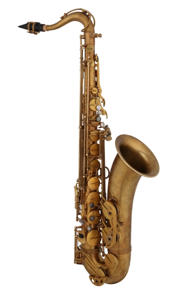
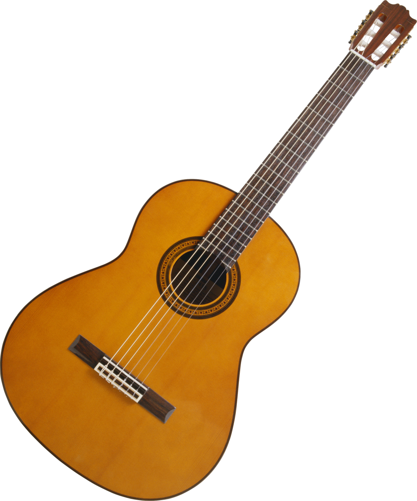
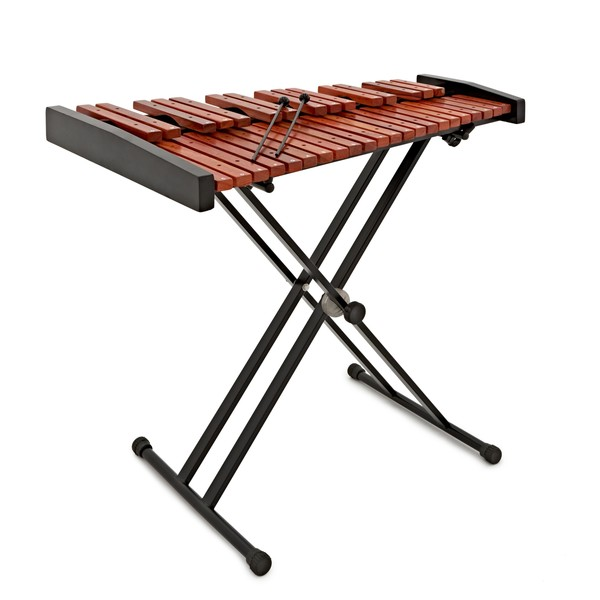
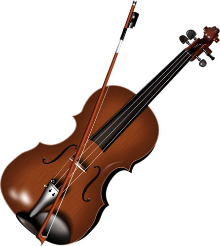

Zvuci Instrumenata
Pocetna
O autoru
Uputstvo
Naziv instrumenta
Slika instrumenta
Zvuk instrumenta
Klavir
Bubnjevi
Saksofon

Gitara

Ksilofon

Pikolo
Violina

Your browser does not support the audio element.
Your browser does not support the audio element.
Your browser does not support the audio element.
Your browser does not support the audio element.
Your browser does not support the audio element.
Your browser does not support the audio element.
Your browser does not support the audio element.